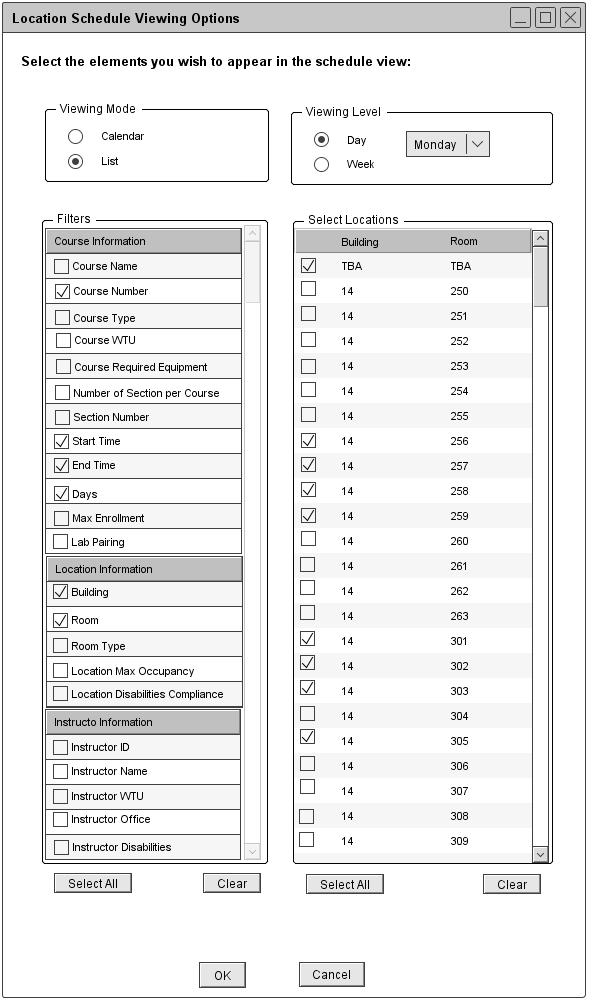
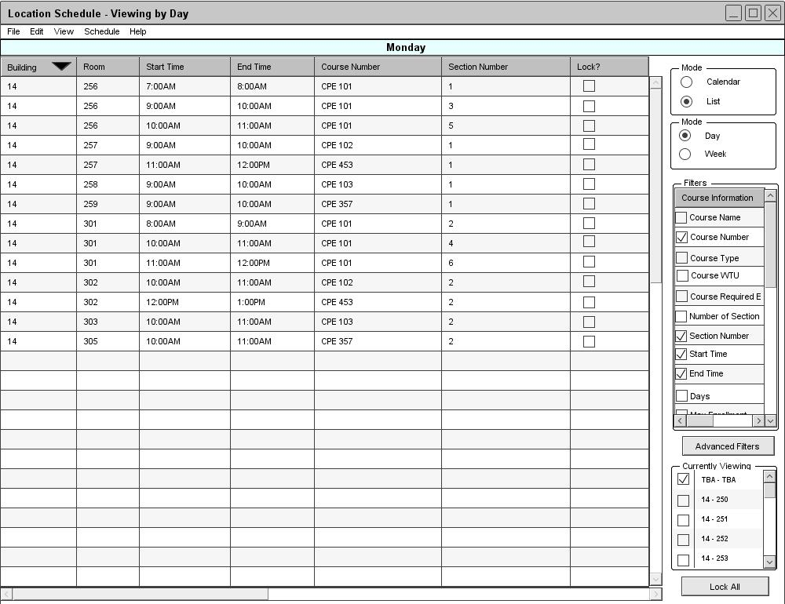

The Scheduler Tool displays a daily location schedule for the selected day of the week. Figure 77 is a filled in version of figure 68.

Figure 77: Viewing a location schedule in the list mode
From the user's selections in figure 77, the Schedule Tool displays a daily location schedule view in the list mode as shown in figure 78.

Figure 78: List Mode of Daily Location Schedule
The Course Number, Section Number, Start Time, End Time, Building, and Room filter options are automatically selected and displayed on the schedule. When viewing a daily location schedule in the list mode, the data is sorted by building number, room number, and then start time by default. The daily location schedule view is very similar to the daily course schedule view.